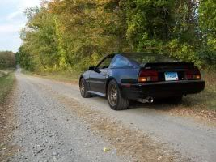

-
http://www.moderndriveline.com/Technica … istory.htm
In 1990 the T5 was upgraded with stronger internals. It's torque rating went from 265ft-lbs to 300ft-lbs. And later, with the Z-spec T5's the rating went up to 330ft-lbs.
84-86 Z31T's use the Non-World Class T5 rated at a measly 265ft-lbs. Has anyone looked into swapping a 1990 or later T5? I assume the bell housing and input shafts would be different…Those could easily be swapped though.
I searched a bit, but I can't find anyone who has experimented with this setup…"produce first.talk second." -
I strongly suspect the 4 bellhousing bolts will be the same. Instead of swapping out input shafts ($$$ basically a tranny teardown & rebuild) how about just getting a clutch disk with the correct spline count for the shaft. As long as the shaft is the same length it *should* work correctly. -
Even if the shaft was magically the same length, its nose would need a diameter which matched the donut on the crankshaft. Right?Gregmatic wrote: I strongly suspect the 4 bellhousing bolts will be the same. Instead of swapping out input shafts ($$$ basically a tranny teardown & rebuild) how about just getting a clutch disk with the correct spline count for the shaft. As long as the shaft is the same length it *should* work correctly.
The end of the input shaft would most likely need to be machined for fitment. So the shaft would need to come out anyways…
But maybe you wouldn't want to re-use the Z31 input shaft. Maybe you would want to use the stronger/better rated shaft from the 1990+ T5 and have it machined to fit."produce first.talk second." -
[quote]Mike_GruiZinga wrote:There's been talk of using the Tremec Racing T5 rebuild kits, I don't recall anyone doing this. Same out come, different angle correct?Originally posted by Gregmatic1984 NA to T Digi-Dash, Morgan's Cam Gears @ -3, Team Green Air Filter, Top Mount Intercooler, Turbo XS Boost Controller, Greddy Type RS BOV, CM 3" Down Pipe, NGK Iridium Spark Plugs, and Maxima E-Fans.
1984 NA 2+2 - New Project Solid Axle Rear - Former Best 1/4 mile 13.452 @105.77mph. -
The T-5 kit would have to be a non-world class kit if they make such a thing. Generic rebuild companies make them but I'm not sure Tremec does. -
Theres a few companies that make performance gearsets/kits for the T5's. Of course, they are super expensive. However, 1990+ mustangs are plentiful in the Junkyards...."produce first.talk second." -
z -
How much power do you think you're making, and what company did you have do this?zmech wrote: I have done this about two or so years ago.
I have a WC T5Z in my 1986. You do have to change the front bellhousing. You do have to have a custom input shaft made. You do have to change the rear bellhousing or custom build around the mustang one. The speedo output no longer works with the changed rear housing. 5th gear thrust bearing does not line up properly with the Nissan rear housing. You do have to have a custom drive shaft made as the output shaft is much larger.
Other than that it is pretty straight forward. Had all the gears and shafts cryo treated to take abuse. The same company that did the cryo treatment did the custom input shaft. The ford shaft is WAY too short. I do however love the 5th gear overdrive. It is crazy tall compared to the Z31 T5. I can redline 4th at about 135mph and then shift to 5th and be right at 3700 or so and be right back into the meat of power. I have seen 152mph with this setup so far. Need more power from engine to get anything past that for now. I can make 136 on the front straight of Willow Springs big track before braking hard for turn one.
Cheers!1984 NA to T Digi-Dash, Morgan's Cam Gears @ -3, Team Green Air Filter, Top Mount Intercooler, Turbo XS Boost Controller, Greddy Type RS BOV, CM 3" Down Pipe, NGK Iridium Spark Plugs, and Maxima E-Fans.
1984 NA 2+2 - New Project Solid Axle Rear - Former Best 1/4 mile 13.452 @105.77mph. -
Wow that is awesome. The T5Z was a very limited production trans, but they are highly rated. I was thinking more of a 90+ T5 that wasnt the 'Z' spec. The 'Z' spec T5's were only used in the Cobra R's (AFIAK) and I doubt I could find one of those in a JY. But the T5Z has the same housing as the 90+ T5 right? Just different internals?zmech wrote: I have done this about two or so years ago.
I have a WC T5Z in my 1986. You do have to change the front bellhousing. You do have to have a custom input shaft made. You do have to change the rear bellhousing or custom build around the mustang one. The speedo output no longer works with the changed rear housing. 5th gear thrust bearing does not line up properly with the Nissan rear housing. You do have to have a custom drive shaft made as the output shaft is much larger.
Other than that it is pretty straight forward. Had all the gears and shafts cryo treated to take abuse. The same company that did the cryo treatment did the custom input shaft. The ford shaft is WAY too short. I do however love the 5th gear overdrive. It is crazy tall compared to the Z31 T5. I can redline 4th at about 135mph and then shift to 5th and be right at 3700 or so and be right back into the meat of power. I have seen 152mph with this setup so far. Need more power from engine to get anything past that for now. I can make 136 on the front straight of Willow Springs big track before braking hard for turn one.
Cheers!
So why does the rear bellhousing need to be changed? And when you changed it to the Nissan rear bell housing how did you account for the 5th gear thrust bearing alignment problem? And I assume the front bellhousing just bolts right up?
The reason I was looking at the 90+ T5 is because they are plentiful (cheap), stronger than any NWC T5, and should swap in easily. It could be a junkyard DIY project, aside from the custom input shaft and driveshaft. The goal would be for this swap to be comparable in price and strength to a 30A swap…
Thanks for posting!"produce first.talk second." -
First of all, let me apologize for the necropost. However, I thought it would be appropriate to post here since this topic had been previously discussed.
There's a guy on Ebay that can rebuild any NWC or WC T-5 to your specs e.g., 2.95, 3.35, 3.5. The Ford bolt pattern should bolt up the the Z bell housing.
The V8 T5 has a 1 and 1/8" 26 diameter spline input shaft and I think the NWC T5 in the early Turbo Z is 24. Can anyone confirm the length and # of splines
on the BW NWC T-5?
Reasons for using WC T-5:
-Uses fiber syncros instead of brass
-Improved bearings
-300 ft/lbs. torque capacity 90-93
-Plentiful, easier to find than FS5R30A

Copyright © 2006–. All rights reserved. Privacy Policy